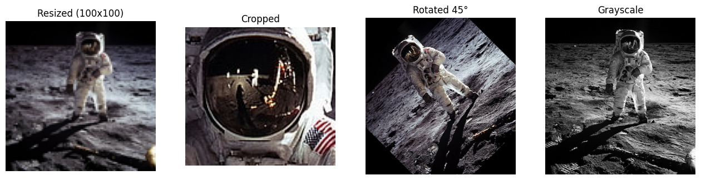
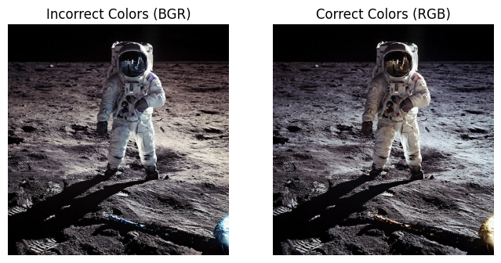
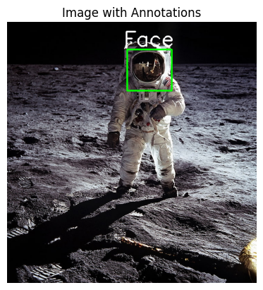
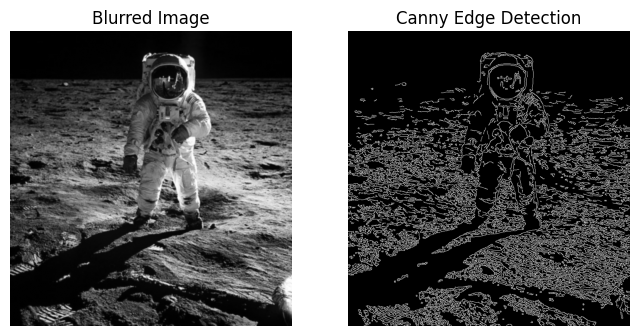

A Practical Guide to Image Manipulation with Pillow and OpenCV
Part 1: Introduction to Image Manipulation Libraries
Before images are used in advanced deep learning models, they often require modification. This notebook introduces the fundamental operations of two key Python libraries for this purpose: Pillow and OpenCV.
Pillow (PIL Fork): A user-friendly library ideal for common, script-based image processing.
OpenCV (Open Source Computer Vision Library): A high-performance library designed for complex computer vision algorithms.
We will use this image of an astronaut for our operations.
# Import necessary librariesfrom PIL import Imageimport numpy as npimport matplotlib.pyplot as pltimport cv2# Define the path to a sample image# Note: You will need to upload an image to your environment# For this example, we will use 'astronaut.png'!wget https://c4.wallpaperflare.com/wallpaper/313/812/28/astronaut-moon-nasa-space-wallpaper-preview.jpg -O astronaut.pngimage_path ='astronaut.png'
Pillow can perform common transformations with simple commands.
# 1. Resize the imageresized_image = pil_image.resize((100, 100))# 2. Crop the image (left, top, right, bottom)# Here we crop the face of the astronautcropped_image = pil_image.crop((350, 80, 480, 200))# 3. Rotate the image by 45 degreesrotated_image = pil_image.rotate(45)# 4. Convert the image to grayscalegrayscale_image = pil_image.convert('L')# Visualize the transformationsfig, axes = plt.subplots(1, 4, figsize=(16, 4))axes[0].imshow(resized_image)axes[0].set_title("Resized (100x100)")axes[1].imshow(cropped_image)axes[1].set_title("Cropped")axes[2].imshow(rotated_image)axes[2].set_title("Rotated 45°")axes[3].imshow(grayscale_image, cmap='gray')axes[3].set_title("Grayscale")for ax in axes: ax.axis('off')plt.show()

2.3 Practical Example: Saving a Thumbnail
A common use case for Pillow is creating and saving smaller versions of images.
# Create a thumbnail (maintains aspect ratio)thumbnail_image = pil_image.copy()thumbnail_image.thumbnail((128, 128))# Save the thumbnail to a filethumbnail_path ='astronaut_thumbnail.jpg'thumbnail_image.save(thumbnail_path)print(f"Thumbnail saved to {thumbnail_path}")print(f"Thumbnail size: {thumbnail_image.size}")
Thumbnail saved to astronaut_thumbnail.jpg
Thumbnail size: (122, 128)
Part 3: Power and Precision with OpenCV
OpenCV is built for performance and provides access to advanced computer vision functions.
3.1 The OpenCV Way of Handling Images
OpenCV loads images directly into NumPy arrays but uses a BGR color channel order by default.
# Load the image using OpenCVcv2_image = cv2.imread(image_path)# OpenCV loads images in BGR format. Matplotlib expects RGB.# We must convert the color channels for correct display.cv2_image_rgb = cv2.cvtColor(cv2_image, cv2.COLOR_BGR2RGB)# Display the original BGR and corrected RGB imagesfig, axes = plt.subplots(1, 2, figsize=(8, 4))axes[0].imshow(cv2_image)axes[0].set_title("Incorrect Colors (BGR)")axes[1].imshow(cv2_image_rgb)axes[1].set_title("Correct Colors (RGB)")for ax in axes: ax.axis('off')plt.show()

3.2 Manipulations and Drawing
OpenCV is excellent for annotating images with shapes and text.
# Work with a copy to keep the original intactimage_to_draw_on = cv2_image_rgb.copy()# 1. Draw a rectangle (bounding box)# cv2.rectangle(image, start_point, end_point, color, thickness)cv2.rectangle(image_to_draw_on, (350, 80), (480, 200), (0, 255, 0), 3) # Green box# 2. Add text# cv2.putText(image, text, position, font, font_scale, color, thickness)cv2.putText(image_to_draw_on, 'Face', (340, 70), cv2.FONT_HERSHEY_SIMPLEX, 2, (255, 255, 255), 3) # White text# Display the annotated imageplt.imshow(image_to_draw_on)plt.title("Image with Annotations")plt.axis('off')plt.show()

3.3 Introduction to Computer Vision
OpenCV provides tools for image analysis, such as blurring and edge detection.
# 1. Image Blurring (to reduce noise)# We use the original grayscale image for these operationsgray_image_cv = cv2.cvtColor(cv2_image, cv2.COLOR_BGR2GRAY)blurred_image = cv2.GaussianBlur(gray_image_cv, (5, 5), 0)# 2. Edge Detection (Canny)edges = cv2.Canny(blurred_image, threshold1=100, threshold2=200)# Visualize the resultsfig, axes = plt.subplots(1, 2, figsize=(8, 4))axes[0].imshow(blurred_image, cmap='gray')axes[0].set_title("Blurred Image")axes[1].imshow(edges, cmap='gray')axes[1].set_title("Canny Edge Detection")for ax in axes: ax.axis('off')plt.show()

Part 4: Conclusion: Pillow vs. OpenCV
Both libraries are powerful, but they are designed for different primary purposes.
Pillow is best for simple, script-based operations like format conversion and basic transformations.
OpenCV is the standard for performance-critical applications and provides a vast library of computer vision algorithms.
Feature
Pillow
OpenCV
Primary Use Case
General-purpose tasks, web, scripting
Computer vision, high-performance analysis
Ease of Use
Very intuitive and “Pythonic”
Steeper learning curve, C++ backend feel
Image Format
Loads as a Pillow Image object (RGB)
Loads directly as a NumPy array (BGR)
Capabilities
Cropping, resizing, rotation, format changes
All of Pillow’s Capabilities + filtering, drawing, feature detection, and more.